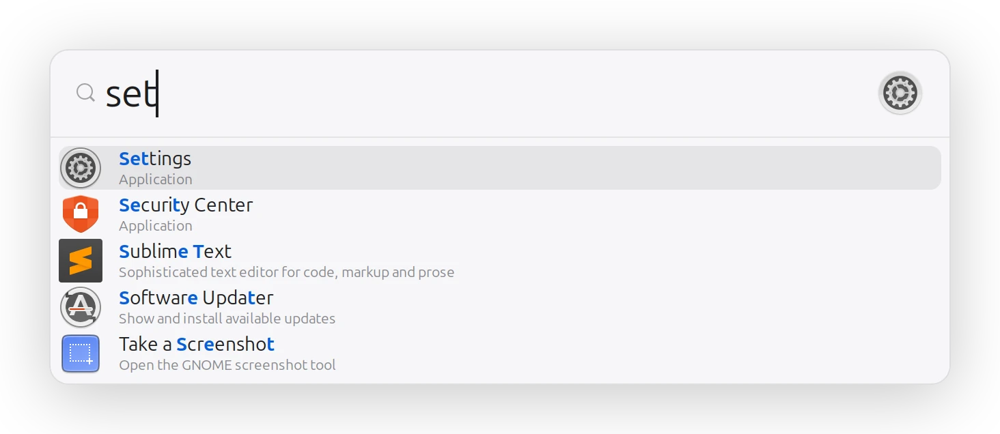
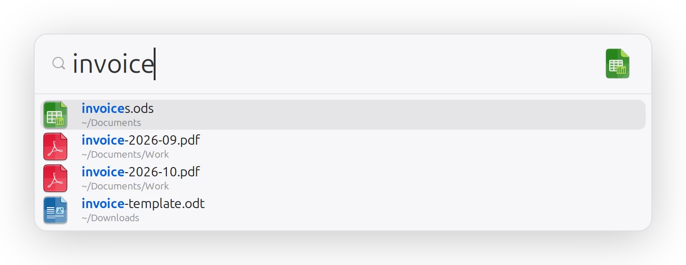
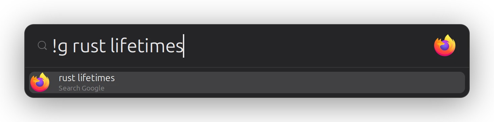

Apps first, matched loosely
stg finds Settings, and the matched letters show why. Apps you launch often drift to the top.


Free and open source • MIT
A small, fast Spotlight-style launcher for GNOME. Apps first, files second, web searches when you ask.


stg finds Settings, and the matched letters show why. Apps you launch often drift to the top.

Nothing matches an app? It looks through your home folder instead.


!bangs!g, !d, !w, !gh and more, before or after the query. Add your own in one plain text file. URLs open straight away.


Lock, screenshot, suspend, log out and power off - named in your desktop's language.


Switch GNOME between light and dark and glimbeam follows instantly - even while it's open. Icons come from your icon theme, names from your system language.
Ubuntu 22.04 or newer, and other GNOME desktops on X11 or Wayland.
wget https://github.com/michev/glimbeam/releases/latest/download/glimbeam_amd64.deb
sudo apt install ./glimbeam_amd64.debOn ARM, use glimbeam_arm64.deb.
git clone https://github.com/michev/glimbeam
cd glimbeam && ./install.shPrefer another shortcut? BINDING='<Super>space' ./install.sh
Then press Alt+Space.